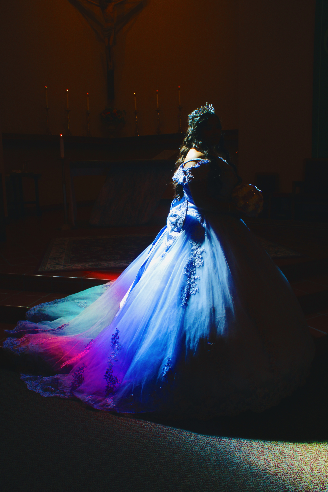
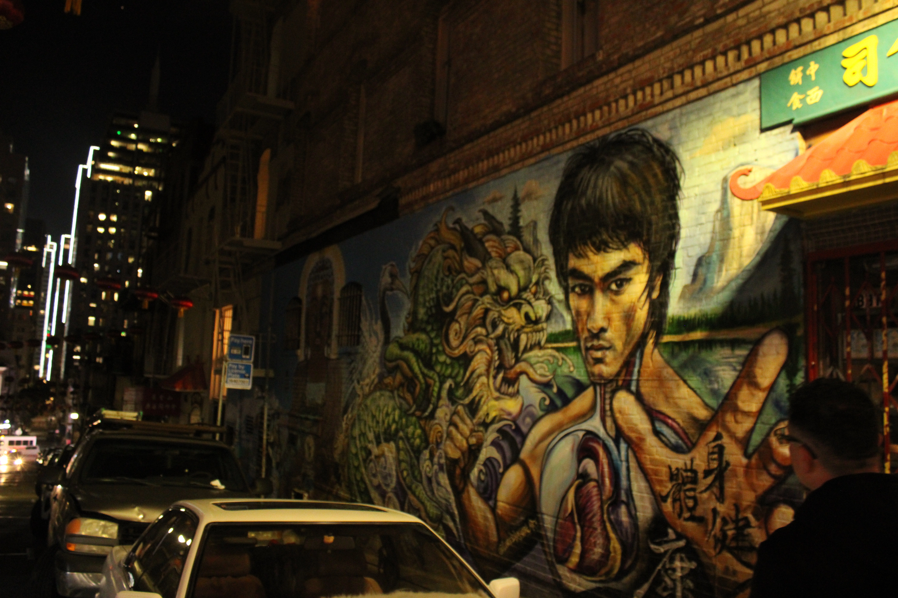

Independent photography portfolio
Moments,
remembered.
Portraits, places, and the moments in between. A collection of photography by Dezmen Acosta.
Selected work
01 / Portfolio Portrait in Color
Portrait in Color
A Study in Light After Hours
After Hours
Street Canvas Market Lights
Market Lights San Francisco After Dark
San Francisco After Dark02 / The photographer
About
I'm Dezmen Acosta, a photographer drawn to atmosphere, meaningful moments, and visual storytelling. My work includes portraits, events, and the places that stay with us.
03 / InquiriesLet's create
Let's create
something.
Interested in portraits, event coverage, or collaborating on a project? Get in touch to discuss your idea.
Email for inquiries